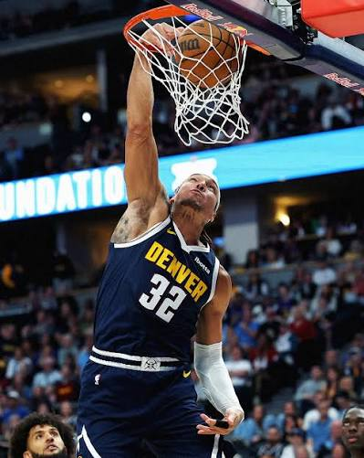
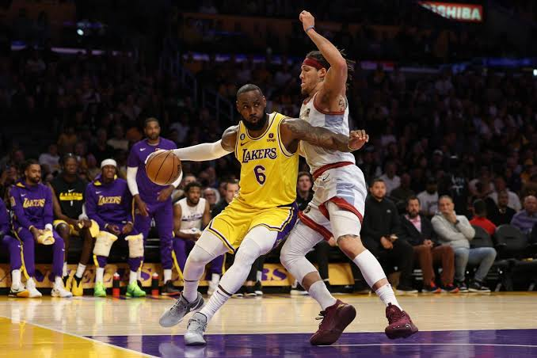

Aaron Addison Gordon (San José, California, 16 de septiembre de 1995) es un jugador de baloncesto estadounidense que pertenece a la plantilla de los Denver Nuggets de la NBA. Con 2,03 metros de estatura se desempeña en la posición de ala-pívot. Fue seleccionado en la cuarta posición del Draft de la NBA de 2014 por los Orlando Magic.
Conocido internacionalmente por su extraordinaria capacidad atlética y sus icónicas participaciones en el Concurso de Mates de la NBA (Slam Dunk Contest) en 2016 y 2020, Gordon adaptó su estilo de juego tras llegar a Denver en 2021 para convertirse en un especialista defensivo y conector ofensivo fundamental.
Durante la campaña de campeonato 2022-23 de los Nuggets, desempeñó un rol crucial defendiendo a las mayores estrellas rivales y anotando cerca del aro. Su versatilidad física y química con Jokić convirtieron a Gordon en una de las piezas más valiosas de la franquicia de Colorado.


Campeón de la NBA en 2023 con los Denver Nuggets y dos veces subcampeón del Slam Dunk Contest de la NBA.